Lab2_uart
The design consists of a uart receiver receiving the input typed on a keyboard (emulated in PS) and displaying the binary equivalent of the typed character on the 4 LEDs. When a push button is pressed, the lower and upper nibbles are XORed. The block diagram is as shown in the following figure.
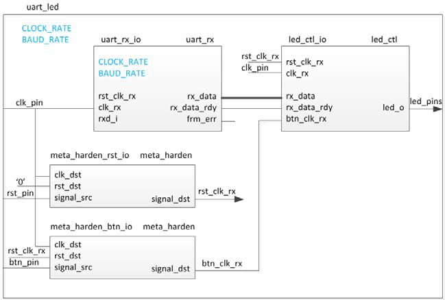
Source code
Steps
Create a Vivado Project
- Same operations as Lab1. (Do it yourself this time!)
Add source files
- You should see a hierarchy like this in your Sources window.
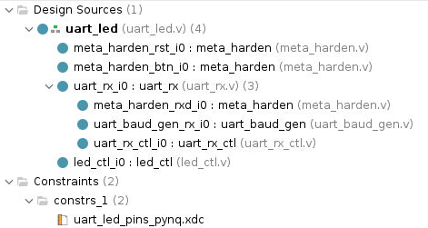
Add code
-
Double-click on the
uart_ledentry to view its content. Notice in the Verilog code, theBAUD_RATEandCLOCK_RATEparameters are defined to be 115,200 and 125 MHz. Also, notice that the lower-level modules are instantiated. Themeta_hardenmodules are used to synchronize the asynchronous reset and push-button inputs (Read the code!). -
Expand
uart_rx_i0instance to see its hierarchy. This module used the baud rate generator (It generate a 16x Baud enable.) and a finite state machine. Therxd_pinis sampled at a rate that is 16x the baud rate. -
Because there are only 4 leds on PYNQ_Z2 board (The source code was oringally used for a differenct board.), so we need to change the code in three files:
led_ctl.v,uart_led.vanduart_led_pins_pynq.xdc. -
The
uart_led_timing_pynq.xdcfile is not required for this project, as it causes asetup timing problem. This file was originally intended to demonstrate how to analyze timing problems, but it is not relevant for the LEDs, which do not need any timing constraints. However, if you are interested in learning more about timing analysis, you can refer to this:
- Double click on
led_ctl.v.
module led_ctl(
input clk_rx,
input rst_clk_rx,
input btn_clk_rx,
input [7: 0] rx_data,
input rx_data_rdy,
output reg [3: 0] led_o
);
reg old_rx_data_rdy;
reg [7: 0] char_data;
reg [3: 0] led_pipeline_reg;
always @(posedge clk_rx)
begin
if (rst_clk_rx)
begin
old_rx_data_rdy <= 1'b0;
char_data <= 8'b0;
led_o <= 4'b0;
end
else
begin
old_rx_data_rdy <= rx_data_rdy;
if (rx_data_rdy && !old_rx_data_rdy)
begin
char_data <= rx_data;
end
if (btn_clk_rx)
led_pipeline_reg <= char_data[7: 4];
else
led_pipeline_reg <= char_data[3: 0];
end
led_o <= led_pipeline_reg;
end
endmodule
- Double-click on
uart_led.v
module uart_led(
input clk_pin,
input rst_pin,
input btn_pin,
input rxd_pin,
output [3:0] led_pins
);
parameter BAUD_RATE = 115_200;
parameter CLOCK_RATE = 125_000_000;
wire rst_clk_rx;
wire btn_clk_rx;
wire [7: 0] rx_data;
wire rx_data_rdy;
meta_harden meta_harden_rst_i0 (
.clk_dst (clk_pin),
.rst_dst (1'b0), // No reset on the hardener for reset!
.signal_src (rst_pin),
.signal_dst (rst_clk_rx)
);
meta_harden meta_harden_btn_i0 (
.clk_dst (clk_pin),
.rst_dst (rst_clk_rx),
.signal_src (btn_pin),
.signal_dst (btn_clk_rx)
);
uart_rx #(
.CLOCK_RATE (CLOCK_RATE),
.BAUD_RATE (BAUD_RATE)
) uart_rx_i0 (
.clk_rx (clk_pin),
.rst_clk_rx (rst_clk_rx),
.rxd_i (rxd_pin),
.rxd_clk_rx (),
.rx_data_rdy (rx_data_rdy),
.rx_data (rx_data),
.frm_err ()
);
led_ctl led_ctl_i0 (
.clk_rx (clk_pin),
.rst_clk_rx (rst_clk_rx),
.btn_clk_rx (btn_clk_rx),
.rx_data (rx_data),
.rx_data_rdy (rx_data_rdy),
.led_o (led_pins)
);
endmodule
-
You need to add this constraint file (
uart_led_pins_pynq.xdc) to your project. -
Double click on
uart_led_pins_pynq.xdc:
# On-board led
set_property PACKAGE_PIN M14 [get_ports {led_pins_0[3]}]
set_property IOSTANDARD LVCMOS33 [get_ports {led_pins_0[3]}]
set_property PACKAGE_PIN N16 [get_ports {led_pins_0[2]}]
set_property IOSTANDARD LVCMOS33 [get_ports {led_pins_0[2]}]
set_property PACKAGE_PIN P14 [get_ports {led_pins_0[1]}]
set_property IOSTANDARD LVCMOS33 [get_ports {led_pins_0[1]}]
set_property PACKAGE_PIN R14 [get_ports {led_pins_0[0]}]
set_property IOSTANDARD LVCMOS33 [get_ports {led_pins_0[0]}]
# Reset - BTN1
set_property PACKAGE_PIN L19 [get_ports btn_pin_0]
set_property IOSTANDARD LVCMOS33 [get_ports btn_pin_0]
# CLK source 125 MHz
create_clock -period 8.000 -name clk_pin_0 -waveform {0.000 4.000} [get_ports clk_pin_0]
set_property PACKAGE_PIN H16 [get_ports clk_pin_0]
set_property IOSTANDARD LVCMOS33 [get_ports clk_pin_0]
Synthesize the Design
Synthesize the design with the Vivado synthesis tool and analyze the Project Summary output.
- Click on Run Synthesis under the Synthesis tasks of the Flow Navigator pane.
The synthesis process will be run on the uart_led.v and all its hierarchical files. When the process is completed a Synthesis Completed dialog box with three options will be displayed.
-
Select the Open Synthesized Design option and click OK as we want to look at the synthesis output. Click Yes to close the elabrated design if the dialog box is displayed.
-
Select the Project Summary tab. If you don’t see the Project Summary tab then select Layout > Default Layout.
-
Click on the Table tab in the Project Summary tab.
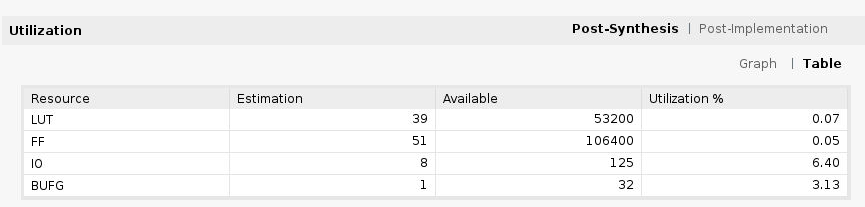
- Click on Schematic under the Open Synthesized Design tasks of Synthesis tasks of the Flow Navigator pane to view the synthesized design in a schematic view.
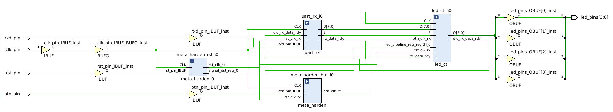
Notice that IBUF and OBUF are automatically instantiated (added) to the design as the input and output are buffered. There are still four lower level modules instantiated.
-
Double-click on the
uart_rx_i0instance in the schematic view to see the underlying instances. -
Select the
uart_baud_gen_rx_i0instance, right-click on it, and select Go To Source. Notice that the line instantiateduart_rx_i0is highlighted. Also notice that theCLOCK_RATEandBAUD_RATEparameters are passed to the module being called. -
Go back to the schematic, double-click on the
meta_harden_rxd_ioinstance to see how the synchronization circuit is implemented using two FFs. This synchronization is necessary to reduce the likelihood of metastability.
Generate the utilization and power reports
- Click on Report Utilization under the Synthesized Design, and click OK to generate the utilization report.
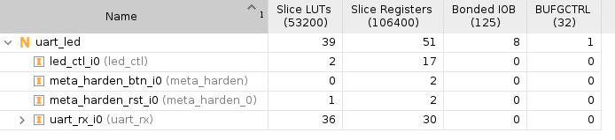
- Select Slice LUTs entry in the left pane and see the utilization by lower-level instances. You can expand the instances in the right pane to see the complete hierarchy utilization.
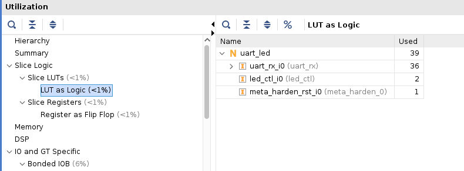
- Click on Report Power under the Synthesized Design, and click OK to generate the estimated power consumption report using default values. Note that this is just an estimate as no simulation run data was provided and no accurate activity rate, or environment information was entered.
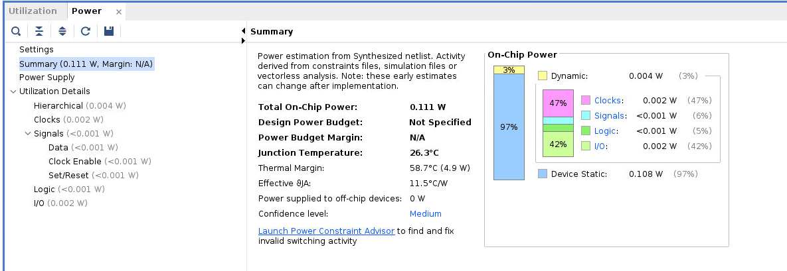
Implement the Design
-
Click Create Block Design under IP INTEGRATOR. Click + (Add IP) and search zynq, add ZYNQ7 Processing Syatem into the block design.
-
Create a wrapper on the block diagram and set it as the top file (Do it yourslef!).
- Right click on the blank part of Diagram, select Add Module…, select
uart_ledand click OK.
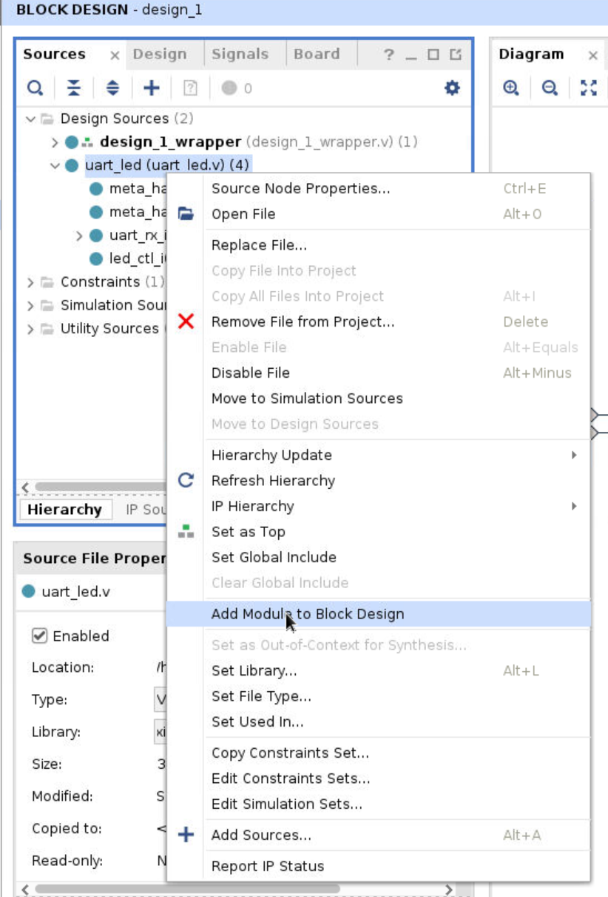
- Back to Diagram window, add
axi uartlitemodule. We want to send data to the uart_led module through itsrxport. To do this, we will use the UART from PS side, which is connected to the ARM core by the AXI protocol. Then, we will connect thetxport of the UART on the PS side (axi uartlite) to theuart_ledmodule in PL. Double-click on this module and configure it as shown in the subsequent figure. To prevent therxport ofaxi uartlitefrom becoming floating, set therxport to 1 (it is not needed for this project; ensure it remains in the IDLE state). We can disregard other ports, such as the interrupt ofaxi uartlite, since it’s an output port.
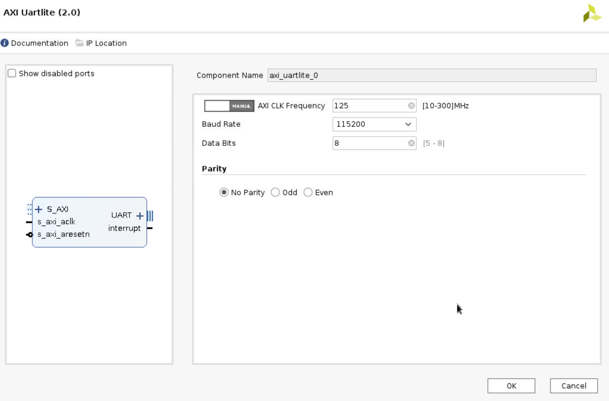
- Now, let us create the system clock. Right click on the blank part and choose Create port. Set the port name to be clk_pin_0, set the Type as Clock and the Frequency as 125 MHz. And connect this port to
uart_led’sclk_pinandZYNQ7 Processing System’sM_AXI_GP0_ACLK. Remeber to connect theclk_pintoZYNQ7 Processing System’sM_AXI_GP0_ACLKfirst and then connect theuart_led’sclk_pin.
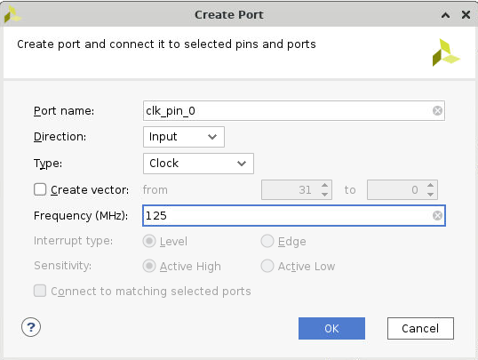
-
The
rst_pinofuart_ledmodule is active high. You will need to convert it to active low for uart_led module. So addutil_vector_logicas a bridge that connect theperipheral_aresetofProcessor System Reset. -
Double click on
util_vector_logicand set theC_SIZEas 1 and select the not operation.
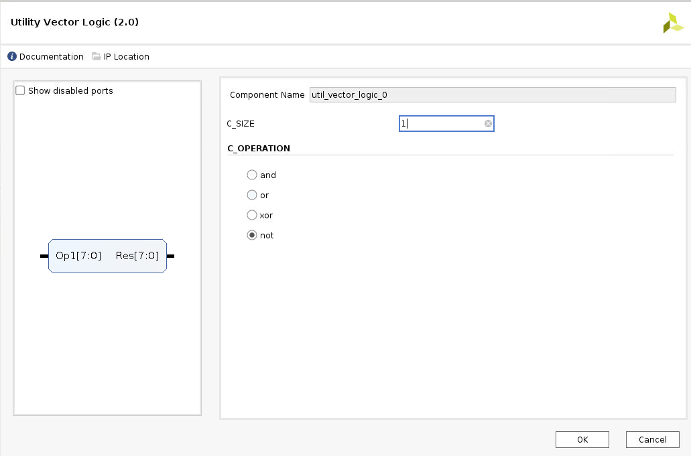
-
Expand
UARTin theaxi_uartlitemodule, and connecttxtorxd_pinport ofuart_ledmodule. Connectrxto a constant module (add IP and set the value = 0; Figure it out yourself!). -
Click
Run Connection AutomationandRun Block Automation, keep in mind not to opt for UART (you do not want to use auto-connection for UART), then click OK.
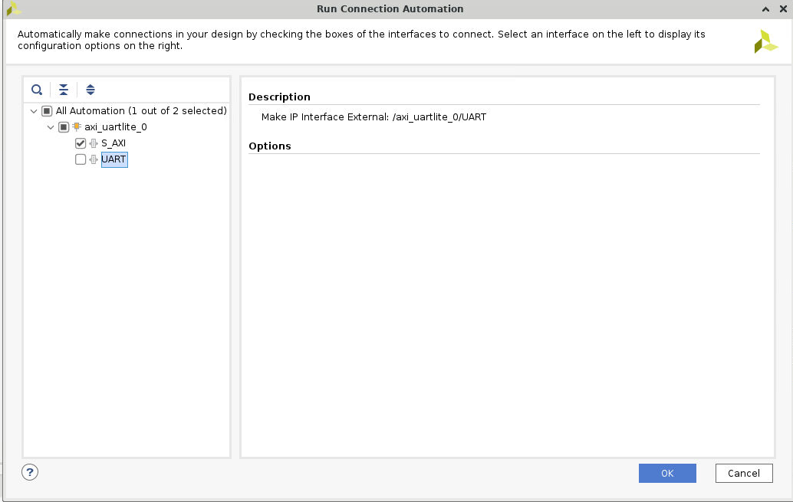
-
Right click
btn_pinandbtn_pin, selectmake external. -
The whole system diagram is shown in the following figure.
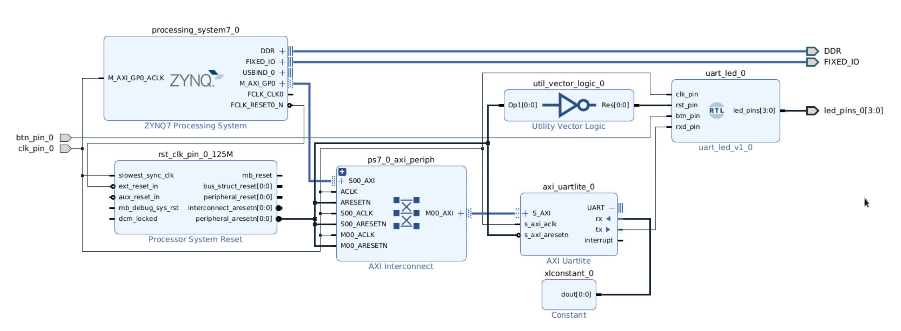
- You need to ensure that the wrapper file is set as the top-level module of your project before generating the bitstream file. This is because Vivado only uses the top-level module to create the bitstream file, and ignores any other files in your project.
Right click on design_1_wrapper and choose Set to Top if it is not the top file yet.
-
Continue with the remaining steps simliar to what we did in Lab 1 (i.e., Check the port of this module and change the constraint file as needed).
-
Remember to change the constraint file to match the names of the pins.
-
Add this line
create_clock -period 8.000 -name clk_pin_0 -waveform {0.000 4.000} [get_ports clk_pin_0]in the contraint file for the primary clock (125 MHz).
By click the Schematic under the Open Implemented Design, and you can check the pin assignments like below:
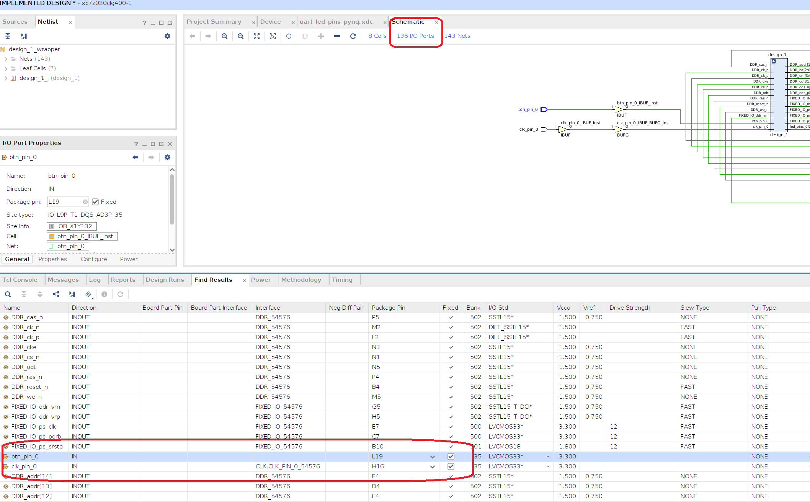
And the pin assignments of led are below the page.
Generate the Bitstream
- Click Generate Bitstream under PROGRAM AND DEBUG
Verify the Functionality
- Download the
.bitfile and.hwhfile to your local PC. If you cannot find these two files, open a new terminal and go the project path, then run the shell command:
find . -name *.bit
find . -name *.hwh
- Power PYNQ on
- Following the similar steps in the Lab 1. Upload
.bitand.hwh, make sure that they have the same name (e.g.,design_1_wrapper.bitanddesign_1_wrapper.hwh). Copyuartlite.pyfrom the upper github source to the folder. Here, we need to fix thewritefunction to fit our project.
def write(self, buf, timeout = 10):
"""
buf: iterable
"""
stop_time = time() + timeout
wr_count = 0
for i in buf:
#Wait while TX FIFO is Full, stop waiting if timeout passes
while (self.uart.read(STAT_REG) & 1<<TX_FULL) and (time()<stop_time):
pass
# Check timeout
if time()>stop_time:
break
self.uart.write(TX_FIFO, i)
wr_count += 1
return wr_count
- Create a new
Python3.
from pynq import MMIO
from pynq import Overlay
import sys
sys.path.insert(1, './src')
from uartlite import *
ol = Overlay("design_1_wrapper.bit")
ol.download()
# Address of the ip core
# Address can be found in the .hwh file
ADDRESS = 0x42c00000
uart = UartAXI(ADDRESS)
# Setup AXI UART register
uart.setupCtrlReg()
# Loopback test
l = [0x42] #0100 0010
uart.write(l)
- Then you can observe the phenomenon that corresponds to the input.
According to the code in led_ctl.v,
if (btn_clk_rx)
led_pipeline_reg <= char_data[7:4];
else
led_pipeline_reg <= char_data[3:0];
If you input 0xd3 and do not press the button, you should see.
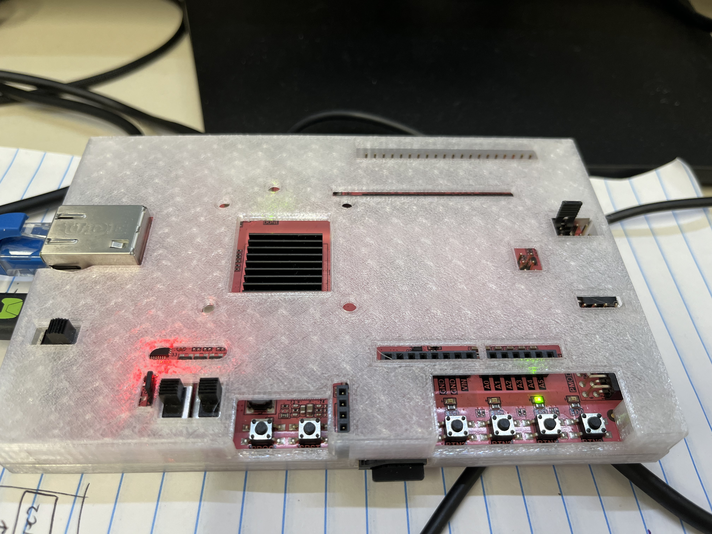
Else, if you press the button, you should see.
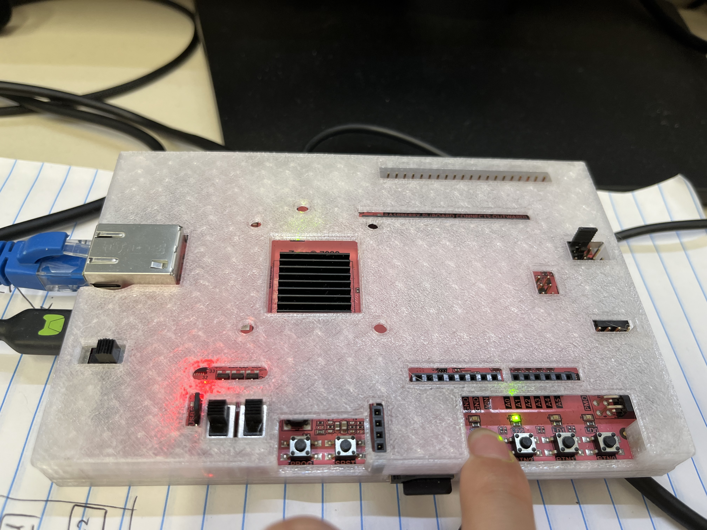